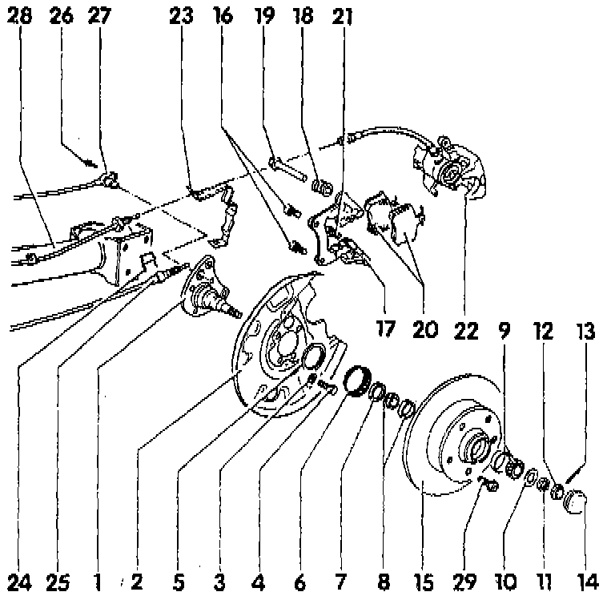
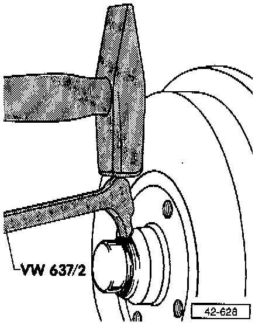
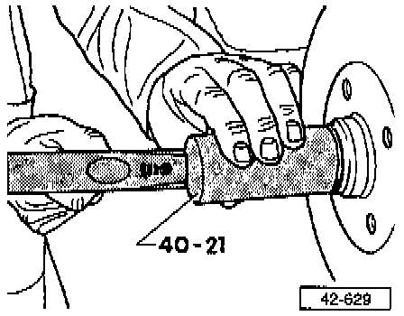
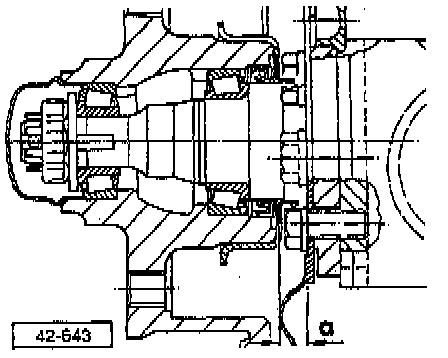
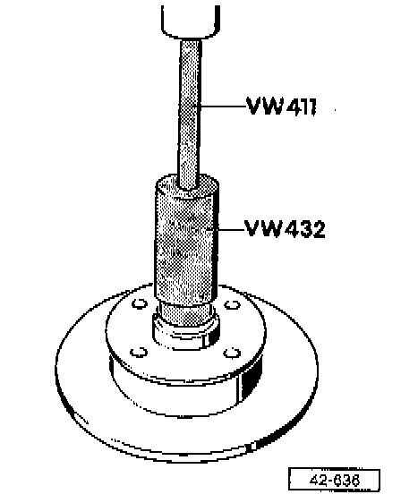
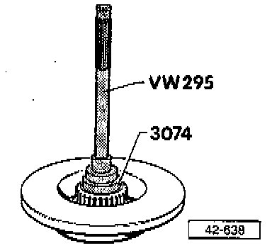

With Disc Brakes
Wheel Bearing and Axle (Disc Brakes), Servicing
NOTE:
- Components shown are for vehicles with 5-lug wheel mounting.
- Assembly and service for vehicles with 4-lug wheel mounting is identical.
- Careful sealing, absolute cleanliness and precise adjustment are essential to long wheel bearing service life.
- Reinstall clean bearings and add grease only. Do not wash bearings.
- Adjust wheel bearing play carefully
- Directly below the component legend are the Fig. numbers. Please refer to these for information regarding removal and installation instructions

1 Stub Axle
- Contact surface against axle beam must be completely clean
- Do not attempt to straighten
2 Splash shield
3 Dished Washer
- Large contact surface (concave side) faces splash shield
4 Bolt
- Tighten to: 60 Nm (44 ft lb)
5 Cover Ring
- Always replace
- Installation position, refer to Fig. 5
- Drive on with VW 519
6 Rotor For ABS Wheel Speed Sensor
- Only for vehicles with ABS
7 Seal
- Fill area between sealing lips with grease
- Installing, refer to Fig. 8
8 Inner Wheel Bearing
- Drive outer race out with copper drift
- Installing, refer to Fig. 7
9 Outer Wheel Bearing
- Drive outer race out with copper drift
- Installing, refer to Fig. 6
10 Thrust Washer
11 Hex Nut
- Tighten to adjust wheel bearing free play, refer to Fig. 4
12 Lock Ring
13 Cotter Pin
- Always replace
14 Grease Cap
- Removing, refer to Fig. 1 and Fig. 2
- Installing, refer to Fig. 3
15 Brake disc
- Coat inside of hub with grease before installing
16 Bolt
- Tighten to: 56 Nm (41 ft lb)
17 Brake Pad Carrier
18 Protective Cap
19 Guide Bolt
20 Brake Pads
21 Bolt
- Tighten to: 35 Nm (26 ft lb)
- Always replace
22 Brake Caliper
- Repair to Brakes and Traction Control
23 Brake Hose Bracket
24 Spring Clamp
25 Parking Brake Cable
- Adjusting parking brake, refer to Brakes and Traction Control
26 Bolt
27 ABS Wheel Speed Sensor
28 Axle beam
29 Lug Bolt
- Tighten to: 110 Nm (81 ft lb)

Fig. 1 - Grease Cap, Removing
- Loosen cap by tapping lightly on tool claw.

Fig. 2 - Grease Cap, Removing

Fig. 3 - Grease Cap, Installing
- Damaged (dented) caps allow moisture to enter.
- Always install as shown.
- Replace damaged caps.

Fig. 4 - Wheel Bearing Play, Adjusting
- The clearance is correctly adjusted when the thrust washer can be moved slightly using finger pressure against a screwdriver (do not pry or twist screwdriver).
- Secure with locking ring and new cotter pin.

Fig. 5 - Cover Ring, Installation Position
- Dimension -a- = 9.5 mm (0.374 in)
- Drive on cover ring with VW 519

Fig. 6 - Outer Race For Outer Wheel Bearing, Pressing In

Fig. 7 - Outer Race For Inner Wheel Bearing Pressing In

Fig. 8 - Seal, Installing